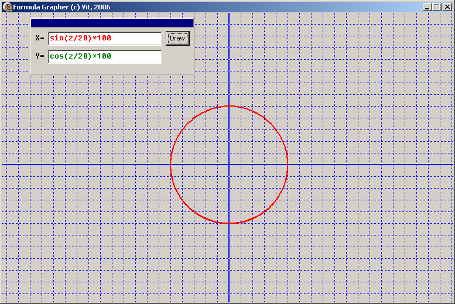

DRKB Explorer
Программа, выводящая график параметрической функции в декартовых координатах
01.01.2010
На днях ребёнку в школе задали задание по графикам функций, при отсутствии под рукой готовых програм нацарапал своё приложение, причём приложение написано "двумя пальцами", т.е. без каких-либо украшательств, не очень красивым кодом и без комментариев - простая програмка, написаннная за 15 минут.

Вот исходники:
unit Main;
interface
uses
Windows, Messages, SysUtils, Variants, Classes, Graphics, Controls, Forms,
Dialogs, StdCtrls, ExtCtrls;
type
TForm1 = class(TForm)
Panel1: TPanel;
Button1: TButton;
Edit1: TEdit;
Label1: TLabel;
Edit2: TEdit;
Label2: TLabel;
Panel2: TPanel;
procedure FormPaint(Sender: TObject);
procedure Panel2MouseDown(Sender: TObject; Button: TMouseButton;
Shift: TShiftState; X, Y: Integer);
procedure Edit3KeyPress(Sender: TObject; var Key: Char);
procedure Edit2KeyPress(Sender: TObject; var Key: Char);
procedure Edit1KeyPress(Sender: TObject; var Key: Char);
procedure Button3Click(Sender: TObject);
procedure Button2Click(Sender: TObject);
procedure Button1Click(Sender: TObject);
private
procedure DrawFunction(FormulaX, FormulaY:string; Cl:TColor);
function GetValue(FormulaText:string; x: real): real;
procedure SetupAxes;
{ Private declarations }
public
{ Public declarations }
end;
var
Form1: TForm1;
implementation
uses math, parsing;
{$R *.dfm}
Function TForm1.GetValue(FormulaText:string; x:real):real;
begin
Result:=GetFormulaValue(StringReplace(FormulaText, 'z', floattostr(x),[rfReplaceAll, rfIgnoreCase]));
end;
procedure TForm1.Panel2MouseDown(Sender: TObject; Button: TMouseButton;
Shift: TShiftState; X, Y: Integer);
begin
ReleaseCapture;
Panel1.perform(WM_SysCommand, $F012, 0);
end;
procedure TForm1.SetupAxes;
var point:TPoint;
i:integer;
begin
{Draw axis X}
Canvas.Pen.Width:=2;
Canvas.Pen.Color:=clBlue;
Point.X:=0;
Point.Y:=(height div 2);
canvas.PenPos:=Point;
Canvas.LineTo(width, height div 2);
{Draw axis Y}
Point.X:=width div 2;
Point.Y:=0;
canvas.PenPos:=Point;
Canvas.LineTo(width div 2, height);
for I := 1 to (width div 40) do
begin
Canvas.Pen.Width:=1;
Canvas.Pen.Style:= psDot;
Point.X:=width div 2 +i*20;
Point.Y:=0;
canvas.PenPos:=Point;
Canvas.LineTo(width div 2 +i*20, height);
end;
for I := -1 downto (width div 40)*(-1) do
begin
Canvas.Pen.Width:=1;
Canvas.Pen.Style:= psDot;
Point.X:=width div 2 +i*20;
Point.Y:=0;
canvas.PenPos:=Point;
Canvas.LineTo(width div 2 +i*20, height);
end;
for I := 1 to (height div 40) do
begin
Canvas.Pen.Width:=1;
Canvas.Pen.Style:= psDot;
Point.Y:=height div 2 +i*20;
Point.X:=0;
canvas.PenPos:=Point;
Canvas.LineTo(width, height div 2 +i*20);
end;
for I := -1 downto (height div 40)*(-1) do
begin
Canvas.Pen.Width:=1;
Canvas.Pen.Style:= psDot;
Point.Y:=height div 2 +i*20;
Point.X:=0;
canvas.PenPos:=Point;
Canvas.LineTo(width, height div 2 +i*20);
end;
end;
procedure TForm1.Button1Click(Sender: TObject);
begin
Invalidate;
end;
procedure TForm1.Button2Click(Sender: TObject);
begin
Invalidate;
end;
procedure TForm1.Button3Click(Sender: TObject);
begin
Invalidate;
end;
Procedure TForm1.DrawFunction(FormulaX, FormulaY:string; Cl:TColor);
var i, t:integer;
j:real;
P:real;
x1, x2, x0:real;
W:integer;
k:real;
point:TPoint;
error:boolean;
prev, value:integer;
begin
if (FormulaX='') or (FormulaY='') then exit;
SetupAxes;
Canvas.Pen.Color:=cl;
Canvas.Pen.Style:= psSolid;
Canvas.Pen.Width:=2;
try
Point.X:=(width div 2) + round(GetValue(FormulaX, -100));
Point.Y:=(height div 2) - round(GetValue(FormulaY, -100));
Canvas.PenPos:=point;
For t:=-100 to 100 do
begin
Point.X:=(width div 2) + round(GetValue(FormulaX, t));
Point.Y:=(height div 2) - round(GetValue(FormulaY, t));
Canvas.LineTo(Point.X,Point.Y);
end;
except
end;
end;
procedure TForm1.Edit1KeyPress(Sender: TObject; var Key: Char);
begin
if key=#13 then Invalidate;
end;
procedure TForm1.Edit2KeyPress(Sender: TObject; var Key: Char);
begin
if key=#13 then Invalidate;
end;
procedure TForm1.Edit3KeyPress(Sender: TObject; var Key: Char);
begin
if key=#13 then Invalidate;
end;
procedure TForm1.FormPaint(Sender: TObject);
begin
DrawFunction(Edit1.Text, Edit2.Text, clRed);
end;
end.